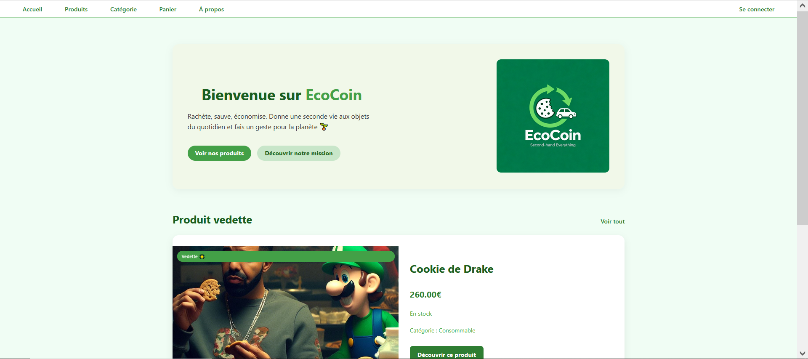

Réalisation d'un site ecommerce en trinome (EcoCoin).
De la base de données SQL à l'interface utilisateur, en passant par une architecture MVC native stricte.

EcoCoin est une entreprise fictive qui repose sur un concept simple mais écologique : nous rachetons tous les objets entamés pour les revendre. L'idée est de donner une seconde vie à n'importe quel produit, même s'il a déjà servi, afin de limiter le gaspillage.
<?php
namespace App\SaeDevWeb\Modele\Repository;
use App\SaeDevWeb\Modele\DataObject\AbstractDataObject;
abstract class AbstractRepository
{
protected abstract function getNomTable(): string;
protected abstract function getNomClePrimaire(): string;
protected abstract function getNomsColonnes(): array;
protected abstract function formatTableauSQL(AbstractDataObject $objet): array;
protected abstract function construireDepuisTableauSQL(array $objetFormatTableau): AbstractDataObject;
/**
* @return AbstractDataObject[]
*/
public function recuperer(): array
{
$nomTable = $this->getNomTable();
$sql = "SELECT * FROM p_$nomTable";
$pdoStatement = ConnexionBaseDeDonnees::getPdo()->query($sql);
$resultats = [];
foreach ($pdoStatement as $row) {
$resultats[] = $this->construireDepuisTableauSQL($row);
}
return $resultats;
}
public function recupererParClePrimaire(string $valeurClePrimaire): ?AbstractDataObject
{
$nomTable = $this->getNomTable();
$nomClePrimaire = $this->getNomClePrimaire();
$sql = "SELECT * FROM p_$nomTable WHERE $nomClePrimaire = :cleTag";
$pdoStatement = ConnexionBaseDeDonnees::getPdo()->prepare($sql);
$pdoStatement->execute(['cleTag' => $valeurClePrimaire]);
$objetFormatTableau = $pdoStatement->fetch();
if ($objetFormatTableau === false) {
return null;
}
return $this->construireDepuisTableauSQL($objetFormatTableau);
}
// ... Suite du code (Ajouter, Mettre à jour, Supprimer)
}
"J'ai adoré faire ce projet car j'ai vraiment appris à relier un site web à une base de données grâce au modèle MVC. Ça m'a permis de développer mes compétences en PHP, mais aussi en HTML et CSS avec la gestion des Vues. En plus, j'ai pu progresser en SQL en gérant directement la base de données, ce qui m'a fait comprendre l'importance d'une bonne structure."